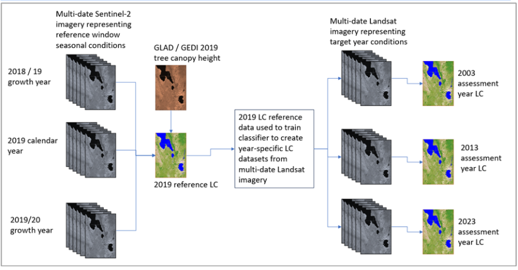
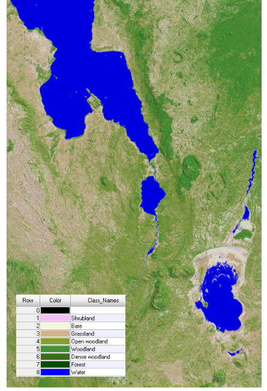
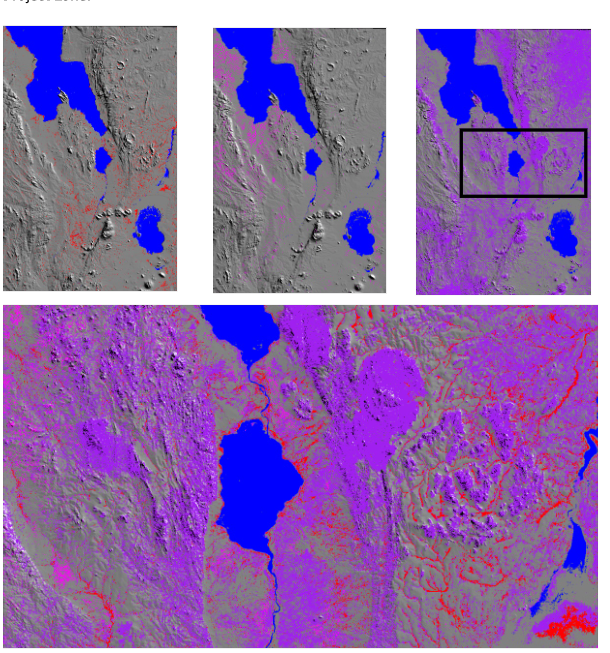

18. Appendix 1: Supporting information¶
18.1 1. Liabilities¶
All tool and data users must verify prior to commitment and use and adequacy of all supplied datasets and products to their required needs. GeoTerra360 will in no event be liable for any direct, indirect, incidental, or consequential damages including lost savings or profit, legal fees, lost data, lost sales, loss of commitments, business interruption, including loss of or other damage, resulting from its datasets and products, regardless of whether GeoTerra360 has been advised of the possibility of such damage. This includes damages incurred by the client or any third party.
The data and data products are therefore provided “as is”, without warranty of any kind, either express or implied, including, but not limited to, the implied warranties of merchantability and fitness for a particular purpose. Whilst all possible care and attention will be taken in the production of the supplied data and report product(s), neither GeoTerra360, nor any of their respective sub-organisations or employees, accept any liability whatsoever for any perceived inaccuracies or misrepresentations of the information presented within the digital data or accompanying report, because of the nature of landscape interpretation, mapping, and modelling from coarse and medium resolution satellite imagery. Any image-mapped boundaries are representative only and do not have any legal standing or authority.
18.2 2. Background Reference Imagery¶
The QGIS tool contains a time series of current, recent, and historical satellite image backdrops that enable tool users to view targets and compare different date landscape conditions. All these backdrop reference images are pre-set up to be viewed in natural colours. The reference image backdrops consist of:
- Current, very high-resolution Google imagery (sub-meter resolution)
- Recent, high-resolution Planet imagery (imagery 2015 – 2020)
- Historical, medium-resolution Landsat imagery (1990, 1995, 2000, 2013, 2014, 2015)
In most cases, all the backdrop imagery, regardless of format, represents multi-date compilations, rather than specific single-date acquisitions. The acquisition windows vary according to the image format. The Google imagery is typically a composite of the best available cloud-free content from very recent months; the Planet imagery is the best single or multi-date combination of data for a specific calendar month; and the Landsat imagery is the best multi-date combination of cloud-free imagery from within a calendar year.
The current, very high-resolution Google imagery is digitally streamed on-demand from Google and provides a very detailed reference picture of the current landscape (± 50cm image resolution).
The Planet imagery is also digitally streamed on-demand, with permission, from Norway's International Climate & Forests Initiative (NICFI) with Planet Labs (https://www.planet.com/nicfi/). Detailed image backdrops are provided for 6-monthly periods (i.e. December and June) for the 2015 – 2020 time window (5m image resolution).
The historical Landsat imagery is pre-loaded data, included as part of the QGIS project data package, and provides a less detailed set of reference pictures, but over a much older and longer time frame that neither the Planet or Google image sources can. The Landsat image backdrops provide annualised landscape representations for 1990, 1995, 2000, 2013, 2014 & 2015 (15m and 30m resolutions, depending on age). The historical Landsat imagery is also presented as 3-band, natural colour mosaics, with each mosaic representing a seamless coverage across the full extent of each project area. The content within each Landsat-generated backdrop imagery has been constructed from all available archive imagery, captured in the target year. As far as possible, the final backdrop mosaics have been constructed as cloud-free coverages, but in some of the older years, especially 1990, the lack of archive content has unfortunately, but unavoidably, resulted in some cloud-obscured areas remaining in the backdrop content; simply because there is insufficient imagery available to create cloud-free content.
The resolution of each image backdrop is based on the resolution of the source Landsat imagery, with 1990, and 1995 is limited to 30m formats, whereas 2000 – 2023 inclusive are presented at 15m resolution by pan-merging spectral content with panchromatic band content.
The Landsat imagery for 2015 allows QGIS tool users to compare the level of landscape detail available from coarse resolution Landsat with comparable 2015 date 5m Planet imagery, and better understand the content in the exclusion masks, which have been modelled from Landsat sourced data. This is important for tool-user orientation, since the recent and current NICFI-Planet and Google base map image resolutions (5m and 50cm respectively), far exceed the resolution (30m) and detail used to model and construct the exclusion map coverages.
18.3 4. Exclusion Mask Construction.¶
For each project area, a series of raster-based exclusion “masks” have been generated. The exclusion masks represent no-go areas for possible re-afforestation sites, based on pre-determined rules (reference Tony). The exclusion mask raster coverages represent:
- Forest exclusion areas
- Grassland exclusion areas
- Wetland exclusion areas
- High Organic Soil (aka Peatland) exclusion areas
4.1 Forest and Grassland Exclusion Masks 4.1.2 Reference Land-Cover Datasets
Both the forest and grassland exclusion masks are derived from the time-series land-cover (LC) datasets that have been specifically generated for this project. The time-series LC datasets represent the 2003, 2013 and 2023 landscapes, and have been modelled from archival Landsat imagery. All available and suitable Landsat image acquisition dates within a target calendar year have been used, to ensure a multi-seasonal representation of landscape characteristics, and minimise any single-season interpretation bias.
The Landsat-based time-series LC datasets have all been time-extrapolated backward and forwards using models trained on an independently generated 2019 base reference LC dataset.
The 2019 base reference LC data has been generated from multi-date 20m resolution Sentinel-2 imagery, representing both the 2019 calendar year (i.e. 01-2019 to 12-2019) and the 2019 growth years (i.e. 07-2018 to 06-2019 and 07-2019 to 06-2020), in conjunction with the GLAD/GEDI 2019 global tree canopy height data. The use of both a target calendar year and overlapping growth years helps minimise any seasonal anomalies resulting from drought or excessively wet periods. The Sentinel-2 LC modelling procedure is the GeoTerraImage in-house capability that leverages cloud archive and cloud computing capabilities to enable the auto-generation of standardised land-cover characteristics, that are based on all available and suitable Sentinel image acquisition dates within the target window.
Both the 2019 base reference LC and the time-series LC datasets describe landscape characteristics with the same standardised legend. The legend contains a range of structural/physiognomic defined vegetation cover characteristics (i.e. forest, thicket / low forest, dense woodland, open woodland, grassland, low shrub), as well as water and bare ground surfaces. The LC classes do not attempt to describe any Land-Use (LU) characteristics in the landscape, as this is added at a later processing step, therefore grass-type crops such as maize would be described as “grassland” and tree crops, such as orchards, as “thicket” if the woody cover density was appropriate. LU content is added later.
Table 1 provides definitions of each of the image-modelled LC classes contained in the standardised legend.
| Class | Name | Description |
|---|---|---|
| 1 | Low shrub / sparse bush | Areas dominated by low woody shrubs and/or sparse herbaceous (i.e.) grass cover. Typically, < 1m in height. |
| 2 | Bare | Areas dominated by non-vegetated surfaces, which can be either natural (i.e., rock outcrops, dry channel sand, or degradation / erosion induced surfaces); or man-made (i.e. built-up, mines). |
| 3 | Grassland | Areas dominated by grass / herbaceous cover, with limited woody cover or bare ground exposure. Woody cover canopy density is typically < 15%, irrespective of height. |
| 4 | Open woodland | Areas containing a mix of scattered or clumped woody cover, within a broader matrix of background grass / herbaceous cover, typically referred to as sparse-to-open woodland, bushland and/or shrubland. |
| Woody cover canopy density is ± 15 - 40 %, with typically 3 – 8m height. | ||
| 5 | Woodland | Areas with a significant by woody cover, but still containing a background grass / herbaceous cover, typically referred to as open-to-semi-closed woodland, bushland and/or shrubland. |
| Woody cover canopy density is ± 40 – 75 %, with typically 3 – 8m height. | ||
| 6 | Thicket / dense woodland | Areas dominated by woody cover, with little or no observable background grass / herbaceous cover when viewed from above the woody canopy, typically referred to as dense or closed canopy woodland, |
| bushland, and/or thicket. Woody cover canopy density is ± 75 – 100 %, with typically 3 – 8m height. | ||
| 7 | Forest | Areas dominated by tall, multi-story forest communities. Woody cover canopy density is ± 75 – 100 %, with typically > 8m height. |
| NB All canopy heights and percent covers are estimates only, and provided for guidance. ** | ||
The final inclusion and spatial extent of each legend class in the LC classification is controlled by the temporal occurrence of that class in the landscape; with permanency thresholds being adapted to local conditions. For example, a raster cell may only become coded as water if water occurred in that cell at least 5/12 months in the target calendar year. These thresholds are adapted for each landscape, using Google Earth imagery as a visual reference guide to determining appropriate values. For all other water occurrences, alternative LC classes would be allocated, based on other LC occurrence thresholds.
The Sentinel-2 2019 reference LC dataset is generated with a 20m raster resolution format, equivalent to the source imagery. All the Landsat-generated time-series LCs are presented in a standardised 25m output format, which represents a re-sampling from the original 30m source data resolution. The 25m standard raster resolution is used as the most appropriate format to integrate the 20m Sentinel and 30m Landsat derived data outcomes. All derived final exclusion masks are also generated as a standardised 25m equivalent raster resolution. Figure 1 is a schematic of the LC modelling process used to generate the 2019 reference LC, and the ultimate target year LC’s.

Figure 1. Schematic representation of the processing steps to first generate the 2019 base reference LC from multi-date Sentinel-2 imagery, and subsequently the time-series LC datasets, also from multi-date Landsat imagery.
Figure 2 provides an example of the Landsat-data generated 2023 base land-cover for the Malawi- south Project Zone, which has been derived using training data extracted from the 2019 Sentinel-2 based land-cover dataset. The example has been terrain shaded in order to help visualise and contextualise this land-cover content across the target landscape.

Figure 2. Terrain-enhanced 2023 base land-cover classification, derived from multi-seasonal Landsat imagery, for the Malawi-south Project Zone extent.
4.1.3 Generation of Forest & Grassland Exclusion Masks
The forest and grassland exclusion masks are derived from the time-series LC datasets, based on rule-based comparisons of LC characteristics over time, at the individual pixel-cell level. The rules used to define whether a pixel cell should or should not be considered an exclusion area are described in Table 2.
As indicated in Table 2, the exclusion modelling rules include the existence of cropland as a modelling parameter. Neither the base reference nor time-series LC data contains any information on cropland, which is a key landscape disturbance factor in the determination of re-afforestation exclusion areas.
A suitable cropland extent mask was compiled from independently generated open-source global and Africa-wide datasets, representing the years 2003, 2007, 2011, 20015, 2016 and 2019. Based on the assumption that no single cropland dataset was 100% accurate and that current cropping activities are more important than historical, the following (algorithmic) approach was used to compile a single cropland mask, for integration with the LC data:
- Cropland mask = [cropland in 2019] + [cropland in at least 3/5 other dates].
The construction of both the forest and grassland exclusion masks used slightly different combinations of LC classes to define “forest” and “grassland” landscapes for each country location, to best align with the country-accepted definition of the lowest woody cover threshold representing “forest”. See Table 3.
Table 3. Country-specific combinations of LC classes used to generate the Forest and Grassland Exclusion Masks
| Country | Grassland Exclusion Mask | Forest Exclusion Mask | Country Specific Lowest Woody Cover Threshold Representing “Forest” |
|---|---|---|---|
| Malawi | Grassland | Open-woodland, Woodland, Thicket / dense Woodland, Forest | 15 % (Open Woodland LC 15 – 40%) |
| Kenya | Grassland | Open-woodland, Woodland, Thicket / dense Woodland, Forest | 15 % (Open Woodland LC 15 – 40%) |
| Uganda | Grassland | Open-woodland, Woodland, Thicket / dense Woodland, Forest | 30 % (Woodland LC 40 – 75 %) |
| NB All canopy heights and percent covers are estimates only, and provided for guidance. | |||
4.2 Wetland Exclusion Mask Generation
The wetland exclusion mask has been constructed using terrain profiling models applied to the 30m resolution ESA Copernicus global terrain dataset. Spatial modelling is used to generate a detailed stream-flow coverage, and then derived cross-channel profiles, for all positions along all stream-flow lines. The cross-channel profile is used to derive a spatial indication of all-terrain localities with the potential to support local inundation and water retention, and therefore possible wetland occurrence. The terrain-only modelling is then modified by integration with image-derived land-cover content, to ensure that potential wetland extents are limited to areas of seasonally dominant low vegetation cover; and exclude tall woody vegetation and non-vegetated bare areas; and areas of permanent water.
4.3 Soil Exclusion Mask Generation. The soil exclusion mask represents areas of very high soil carbon content and is a proxy for peatland occurrence. The soil mask has been constructed using open-source data from the global ISRIC soil database. Soil carbon content has been derived from the 250m resolution ISRIC soil organic carbon (dg/kg) data, using the combined content of depth profiles 0-5, 5-15 and 15-30cm.
The determination of high carbon (aka peat) soils has followed FAO guidelines: Organic soils are identified based on criteria 1 and 2, or 1 and 3 listed below (FAO 1998): (1) Thickness of organic horizon greater than or equal to 10 cm. A horizon of less than 20 cm must have 12 percent or more organic carbon when mixed to a depth of 20 cm. (2) Soils that are never saturated with water for more than a few days must contain more than 20 percent organic carbon by weight (i.e., about 35 percent organic matter), and (3) Soils are subject to water saturation episodes and has either: (i) At least 12 percent organic carbon by weight (i.e., about 20 percent organic matter) if the soil has no clay; or (ii) or at least 18 percent organic carbon by weight (i.e., about 30 percent organic matter) if the soil has 60% or more clay; or (iii) an intermediate proportional amount of organic carbon for intermediate amounts of clay.
Based on the FAO guidelines, the ISRIC soil organic content must be >11% (dg/kg), across the combined 0 – 30cm depth profile. i.e. 11% carbon content = 1100 dg/kg for it to be interpreted as a soil exclusion area. A depth weighting has been used to derive the spatial extent of all soil organic content (soc) soils with >11%: { (soc-depth 0-5) + [(soc-depth 5-15) * 2] + (soc-depth 15-30) }/4
In some locations, there are no soil characteristics that fall within the prescribed exclusion parameters. In such cases, the soil exclusion mask has zero content value, but is still included in the QGIS tool as confirmation that the soil coverage is present and correct.
4.4 Spatial Modifications to the Exclusion Mask Presentation Format
The original content format of the forest, grassland and wetland exclusion masks has been spatially modified to provide more spatially homogenous content in line with industry reporting and analysis requirements. These modifications have been requested and approved by the client. No spatial modifications have been applied to the Soil exclusion mask.
4.4.1 Forest and Grassland Exclusion Mask Modifications
Both the forest and grassland exclusion masks have been content modified to align with a minimum feature area of 0.5 Ha. This 0.5 Ha area is equivalent to 8 raster cells when raster cell resolution is equivalent to 25 x 25m. All exclusion content classified cells that are considered interconnected clusters based on shared cell edges or cell corners have been removed from the exclusion mask content. This spatial cleaning process also results in a “cleaner” exclusion area coverage, resulting from the removal of small, isolated exclusion cells, commonly referred to as “salt-and-pepper” data pattern noise. No change has been made to any potential re-afforestation areas (not covered by exclusion mask content), regardless of the areas involved.
Both the modified forest and grassland masks have had all overlapping areas with the wetland mask removed, so that all forest, grassland and wetland masks are all spatially exclusive against each other.
4.4.2 Wetland Exclusion Mask Modifications
The wetland exclusion mask has been content modified to better represent landscape contiguous (wetland) features, and remove model-generated “salt & pepper” data pattern noise. Specifically, this has involved the in-filling of small non-classified data “holes” within and surrounded by wetland feature areas (up to 1 ha in extent), and the removal of single, isolated wetland-classified cells. This spatial cleaning process also results in a “cleaner”, more homogenous representation of wetland areas across the project landscape. It also excluded model generated “islands” of possible reforestation sites from within wetland areas.
Figure 3 illustrates the Forest. Grassland and Wetland exclusion mask extents in the Malawi-south Project Zone.

Figure 3. Forest, Grassland and Wetland exclusion masks for the Malawi-south Project Zone extent, with close-up detail. The remaining grey background areas are available for reafforestation.
Table 2. Modelling rules applied to the time-series LC data to determine the Forest and Grassland exclusion areas.
Modelling Rules for Forest and Grassland Exclusion Mask Generation | LC 2003 | LC 2013 | LC 2023 | Cropland 2003 | Cropland 2023 | Exclusion Mask | Explanation | | --- | --- | --- | --- | --- | --- | --- | | forest | forest | forest | no | no | Forest exclusion | Undisturbed forest exists in all years (2003, 2013 and 2023) and has never been cleared for cultivation. No planting. | | forest | forest | forest | no | yes | Forest exclusion | 10-year forest rule applies (existence in 2013), regardless of 2023 cropping, since no cropping exists in 2003, so modelled 2013 forest likely to be forest. No planting. | | forest | forest | forest | yes | yes | Available for reforestation | 10-year forest rule does not apply (existence in 2013), since cropping exists in both 2003 and 2023, so modelled forest likely to be cropland. | | other or grass | forest | forest | no | no | Forest exclusion | 10-year forest rule applies (existence in 2013), no cropping in 2003 nor 2023, so modelled 2013 forest likely to be forest. No planting. | | other or grass | forest | forest | no | yes | Forest exclusion | 10-year forest rule applies (existence in 2013), regardless of 2023 cropping, since no cropping exists in 2003, so modelled 2013 forest likely to be forest. No planting. | | other or grass | forest | forest | yes | yes | Available for reforestation | 10-year forest rule does not apply (existence in 2013), since cropping exists in both 2003 and 2023, so modelled forest likely to be cropland. | | other or grass | other or grass | forest | no | no | Forest exclusion | Forest re-growth in 2023, and no cropping exists in 2003 or 2023, so modelled 2023 forest likely to be forest. No planting. | | other or grass | other or grass | forest | yes | yes | Available for reforestation | Existence of 2023 cropland cancels single 2023 occurrence of forest in 2023, so modelled 2023 forest likely to be cropland. | | other only | other only | other only | no | no | Available for planting | No forest in any years, no cropland in any years, so available for planting. | | other only | other only | other only | yes | yes | Available for reforestation | No forest in any years, regardless of 2023 cropland existence, so available for planting. | | forest | other only | other only | no | no | Available for planting | Forest existence only in 2003, prior to 10-year rule, and no cropland in any years, so available for planting. | | forest | other only | other only | yes | yes | Available for reforestation | Forest existence only in 2003, prior to 10-year rule, and cropland in 2023, so available for planting. | | other or grass | forest | other or grass | no | no | Forest exclusion | 10-year forest rule applies (existence in 2013), and no cropping in 2023, so modelled 2013 forest likely to be forest. No planting. | | other or grass | forest | other or grass | no | yes | Forest exclusion | 10-year forest rule applies (existence in 2013), regardless of cropping in 2023, so modelled 2013 forest likely to be forest. No re-planting. | | other or grass | forest | other or grass | yes | yes | Available for reforestation | 10-year forest rule does not apply (existence in 2013), since cropping exists in both 2003 and 2023, so modelled forest likely to be cropland, so available for planting. | | grassland | grassland | grassland | no | no | Grassland exclusion | Undisturbed grassland exists in all years (2003, 2013 and 2023) and has never been cleared for cultivation. No planting. | | other only | other only | grassland | yes | yes | Available for reforestation | Cropping exists in 2023, so regardless of previous conditions, available for planting. | | other only | grassland | grassland | yes | yes | Available for reforestation | Cropping exists in 2023, so regardless of previous conditions, available for planting. | | grassland | grassland | grassland | yes | yes | Available for reforestation | Cropping exists in 2023, so regardless of previous conditions, available for planting. | | forest | grassland | grassland | no | no | Available for planting | Grassland in recent years represents a conversion / clearing from a historical forest coverage, but outside the constraints of the 10-year forest rule, so available for planting. | | other only | grassland | grassland | no | no | Grassland exclusion | Non-grassland (and non-woody) cover characteristics in 20-year window, and grassland in all other years, could be indicative of historical drought impact on grassland cover characteristics. Since never cropped, assume it is a natural grassland. No planting. | | other only | grassland | grassland | yes | yes | Available for reforestation | Cropping exists in 2023, so regardless of previous conditions, available for planting. | | other only | other only | grassland | no | no | Grassland exclusion | Non-grassland (and non-woody) cover characteristics in both 20 and 10-year windows, and grassland in 2023, could be indicative of historical drought impact on grassland cover characteristics. Since never cropped, assume it is a natural grassland. No planting. | | other only | other only | grassland | yes | yes | Available for reforestation | Cropping exists in 2023, so regardless of previous conditions, available for planting. |